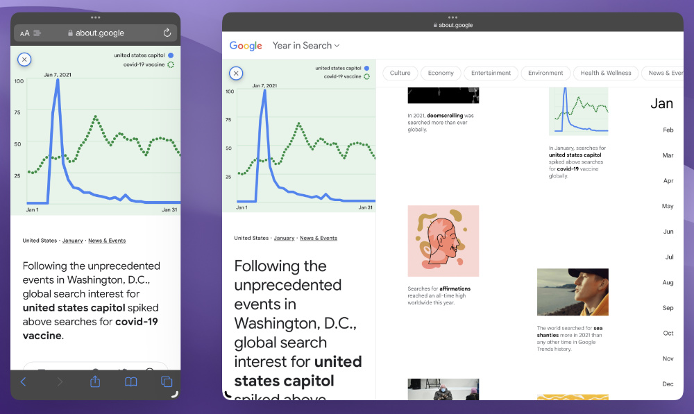
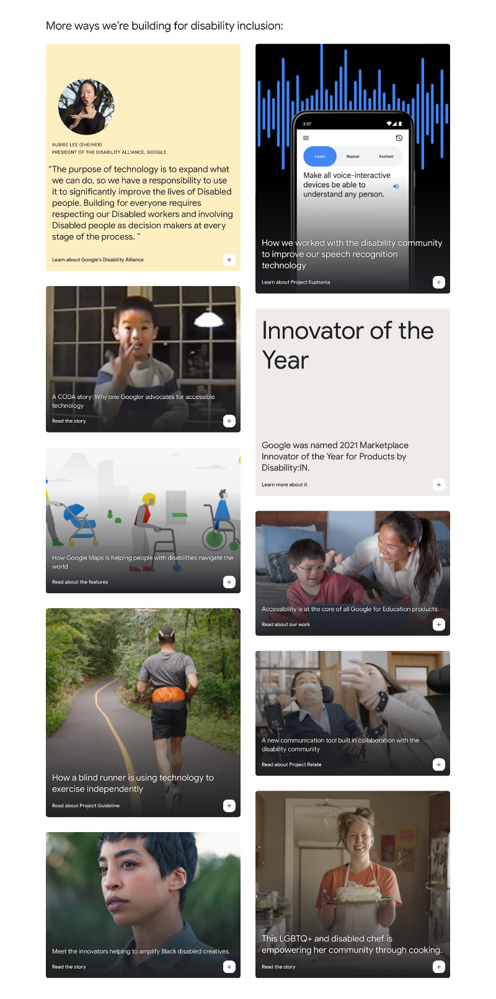
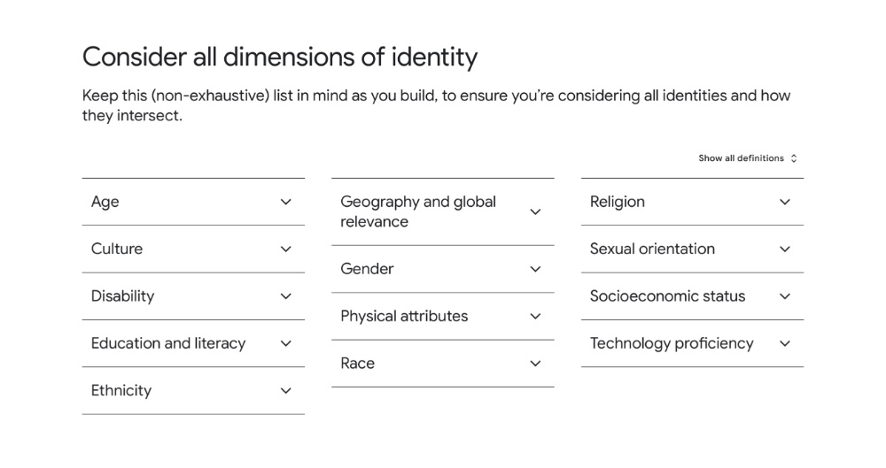
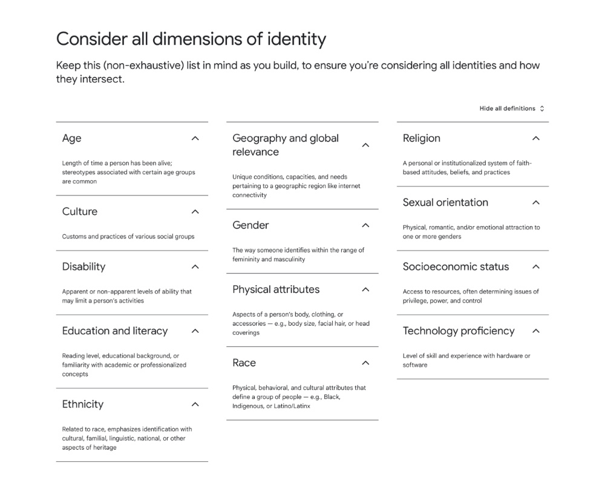
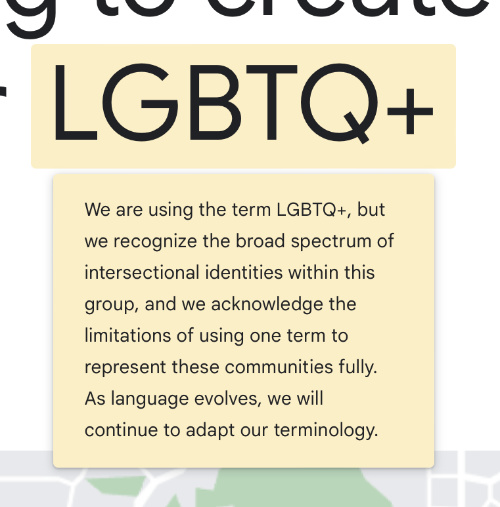
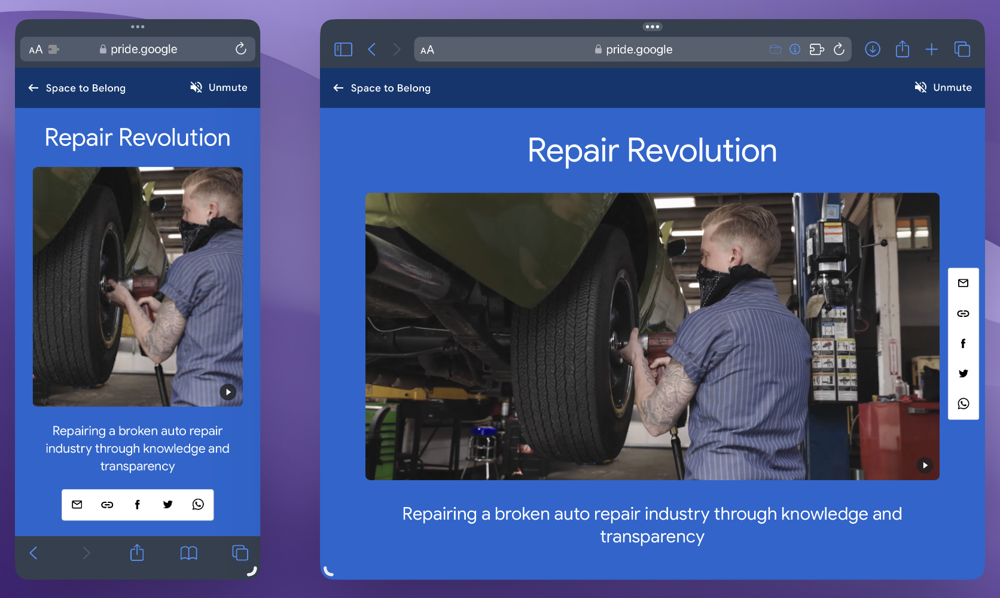
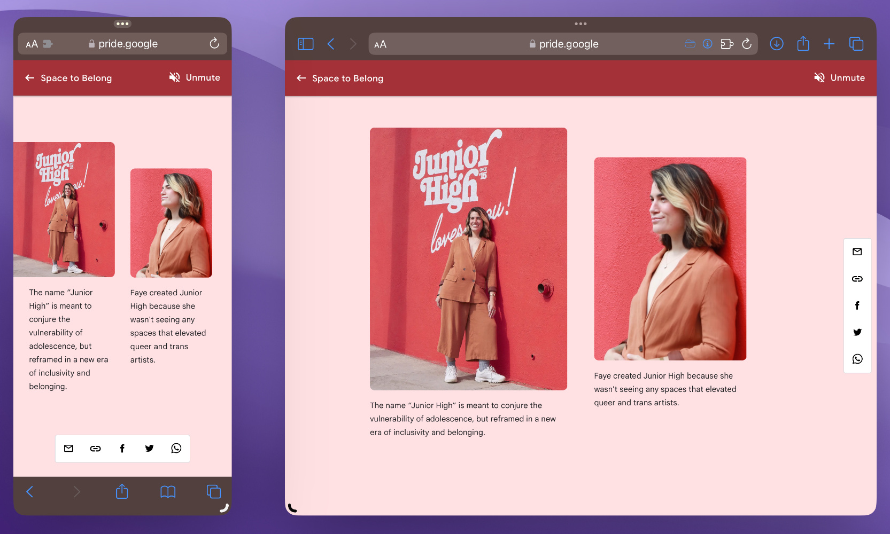

Cards going down the page have preview snippets. When a card is clicked, its detailed view is revealed, with more information and shareable links. On small screens, the detailed view shows as a modal dialog. On wide screens, the detailed view opens to the left of the main content, and the main content remains interactive and independently scrollable while the detailed view is open.
Challenge
The modal dialog is straightforward, but its relationship to the view that opens to the left side and the mechanism for transitioning between the two in a responsive manner are unclear.
Strategy
The detailed view that opens on the left side should be considered a non-modal dialog, since it presents an additional interactive context without inhibiting interaction with the original context. As such, converting between the two requires flipping the aria-modal="true|false" state of the dialog and the inert="true|false" state of the main content.
Result

Dialog modal open on mobile, and non-modal dialog open on desktop.
Cards are arranged into two columns of equal height. Consistent spacing is maintained between the cards, but the cards themselves may grow in height to fit. Keyboard users traverse the cards using the tab key, progressing from left-to-right, top-to-bottom.
Challenge
The challenge is maintaining equal height columns. CSS masonry layout support is still experimental and extremely limited. CSS multicolumn layout would place cards into columns and the focus order would be top-to-bottom, left-to-right instead of the intuitive order. With CSS flexbox, the focus order could get muddled if a card in one column is much bigger than one in the other column.
Strategy
Starting with a CSS grid layout of 2 equal-width columns ensures that the focus order is maintained even if JavaScript is not enabled.
Then, using JavaScript, calculate the heights of the cards in each column. For the shorter column, evenly distribute the difference in height relative to the other column among the cards. Render the result with fixed heights and absolute positioning. The total height must be applied to the container since its children are all absolutely positioned. Recalculate upon throttled window resize.
Result

Two equal-height columns of cards.
Responsive Columns with Expandable Content
Spec
Expandable disclosure widgets are broken up evenly into columns. The space is distributed evenly such that the columns have similar heights when all the expandable widgets are closed. Multiple disclosure widgets can be open at once. When expanded, the widgets must not shift to different columns. The number of columns displayed varies based on screen size.
Challenge
The CSS multicolumn layout algorithm is the best option, but the layout gets recalculated when the expandable widgets are opened. The challenge is preventing the items from moving between columns as they are expanded.
Strategy
First, use CSS `columns` to determine the best way to distribute the closed disclosure widgets into columns. If JavaScript is not enabled, the cards will move between columns, but the layout is functional. Then, with JavaScript, determine column order for each item and manually apply the groupings into columns, using flexbox layout for positioning.
Result

The expandable widgets are closed.

The expandable widgets are all open.
Accessible Definition Tooltip
Spec
Certain words within a headline or paragraph are terms that have definitions that should show as popups on hover.
Challenge
The ARIA tooltip role seems like a good match, but it works similar to aria-describedby. The length of the definition, especially when in the middle of a paragraph, could make the flow confusing if read along with the rest of the content.
Strategy
Particularly because the definition is ancillary and could be skipped over without being announced automatically, it should also be revealed on keyboard focus, and overall treated like an expandable disclosure widget.
Result

The definition tooltip opens on hover or click.
Content is featured in magazine/editorial style, with roomy white space, asymmetrical layouts, and a focus on imagery. The dynamism of the editorial style is maintained on small and large screens.
Challenge
Some components, or pairs of components, need to fit on screen to fill up as much space as possible without scrolling.
Strategy
Determine the current viewport height in JavaScript, ignoring the chrome frame of the browser, and provide it in CSS as a variable/custom property.
Result

The intro headline, video, text, and share bar all fit in the initial viewport.

The asymmetrical layout is preserved through grid spacing and the viewport height variable.